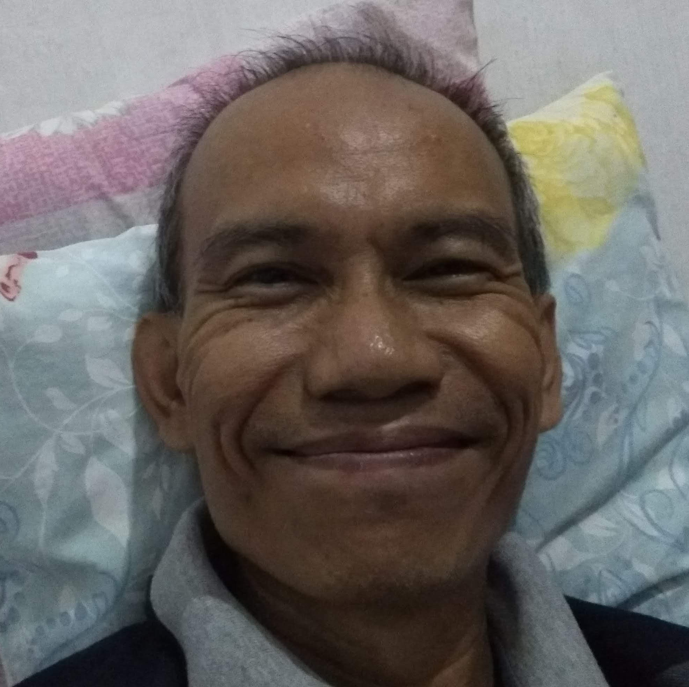

Purnomohadi, S.Si.

Summary
Experienced as a Project Manager on the new model and or new transfer product of switching power supply.
Educations
- Bachelor of Science, Electronics and Instrumentation Study Program, Physics Department, Mathematics and Natural Science Faculty - Gadjah Mada University (1990-1996)
Work Experience
Operations Manager - PT. Apollo Asia Mutlimedia
Feb 2005 - Feb 2013
- Operate all the company operations.
- Maintain the existing clients.
- Grab the new oppoturnity.
Associate Engineer 2 - PT. Toshiba TEC Indonesia
Oct 1996 - Oct 2004
- Project leader for new products or products transfer of switching power supply.
- Ensure all the project run accoding to the schedule.
- Coordinate with other related divisions from planning until shipping to the Customer.
Skills
- Customer relations: ****
- Project management: *****
- Organization skills: ****
Certifications
- Pengenalan Pemrograman Bahasa Kotlin
- Pengenalan Web Programming
- Javascipt Dasar
Others
© Purnomohadi. All rights reserved.